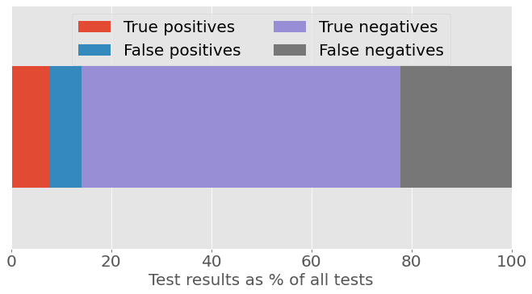

Data science can help close the ‘digital skills’ gap, or so it seems
A ‘digital skills’ gap is harming employer productivity and growth, according to a survey by engineering body IET. But the ‘digital skills’ that are needed sound a lot like data science skills: statistical understanding, data analytics, AI and machine learning.
When ChatGPT launched in December, it wasn’t long before users highlighted the tool’s potential as a homework aid. Pop an essay question into ChatGPT’s prompt box, or feed your creative writing task to the AI instead, et voila – your work is done!
In reality, of course, it’s not quite so simple as that. ChatGPT, like other large language models, has an unfortunate habit of making stuff up – fine for creative writing, perhaps; not so good for a history essay. Outputs need to be checked and verified if you want to guarantee a good mark on your assignments. But while ChatGPT can’t – and shouldn’t – be trusted completely, many have found that it can help lighten the homework load.
With ChatGPT’s user count crossing the 100 million mark this month, it’s understandable that worries about an explosion of AI-written text have proliferated the education profession. Some education systems have decided to ban the use of ChatGPT. Other educators have adopted a more relaxed approach. Writing in Scientific American, law professor John Villasenor argued:
“The time when a person had to be a good writer to produce good writing ended in late 2022, and we need to adapt. Rather than banning students from using labor-saving and time-saving AI writing tools, we should teach students to use them ethically and productively… They need to learn to compose well-organized, coherent essays involving a mix of AI-generated text and traditional writing.”
Villasenor makes a valid point. But experience tells us that not every student is going to use these tools ethically. Some will pursue the path of least resistence and will attempt to pass off ChatGPT’s outputs as their own. So, the question becomes: Is it possible to tell the difference between human-generated text and AI-generated text?
One answer to that question comes from OpenAI, makers of ChatGPT. On January 31, they launched a classifier “to distinguish between text written by a human and text written by AIs from a variety of providers”.
OpenAI introduces the classifier by saying that reliably detecting all AI-written text is “impossible”. But it goes on to say:
“… we believe good classifiers can inform mitigations for false claims that AI-generated text was written by a human: for example, running automated misinformation campaigns, using AI tools for academic dishonesty, and positioning an AI chatbot as a human.”
OpenAI stresses that the current version of the classifier “should not be used as a primary decision-making tool”, and users should take that statement to heart – especially if they are planning to vet student homework with it. In evaluations, OpenAI reports that its classifer correctly identifies AI-written text as “likely AI-written” only 26% of the time, while human written text is incorrectly labelled as AI-written 9% of the time.
These two reported numbers are important, but they don’t directly answer the question that most educators will be asking. “If a piece of homework is flagged as ‘likely AI-written’, what is the probability that it actually is?”
A version of this question will be familiar to medical statisticians, who often find themselves having to explain screening test outcomes – specifically, the probability that a person has disease X given that they have tested positive for the disease. This probability depends on both the prevalence of a disease and the sensitivity and specificity of the test.
Writing for significancemagazine.com in 2017, Tim Brock gave a nice explainer of these terms:
- Prevalence
- The proportion of the population being tested that are affected by a given condition;
- Sensitivity
- The proportion of patients with the condition being screened for that are correctly identified as having the condition;
- Specificity
- The proportion of patients without the condition being screened for that are correctly identified as not having the condition.
We know from OpenAI’s own evaluations that out of 100 pieces of AI-written text, only 26 would be classified as “likely AI-written”, so the classifier’s sensitivity is 26%. And out of 100 pieces of human-written text, 9 would be classified as AI written, so specificity is (100-9) = 91%. But the big piece of information we don’t know is prevelance: What proportion of homework assignments are written by AI?
Let’s be conservative for a moment and assume that 5% of homework assignments are AI-generated. If you were screening 1,000 pieces of homework with the OpenAI classifier, you’d see the following results:
| True positives | False positives | True negatives | False negatives | |
|---|---|---|---|---|
| Results | 13 | 86 | 864 | 37 |
The figures below show the results graphically as proportions of (a) all tests and (b) all positive tests.

Figure 1a: Classifier test results as a percentage of all tests, assuming 5% prevalence of AI-written homework.

Figure 1b: Classifier test results as a percentage of all positive tests, assuming 5% prevalence of AI-written homework.
From Figure 1b specifically, we can see that if the classifier delivers a “likely AI-written” result, the chance that the text is AI-written is only about 13%.
Of course, the prevalence of AI-written homework is likely to vary based on where students live, what age they are, their level of interest in AI tools and technologies, and many other factors. A poll of Stanford University students by The Stanford Daily, for example, found that 17% of respondents used ChatGPT for final assignments or exams in the fall quarter – though it reports that “only about 5% reported having submitted written material directly from ChatGPT with little to no edits”.
But if we reproduce our figures using a prevalence rate of 17%, the chance that a positive result is a true positive is now about 37%.
| True positives | False positives | True negatives | False negatives | |
|---|---|---|---|---|
| Results | 44 | 75 | 755 | 126 |
Figure 2a: Classifier test results as a percentage of all tests, assuming 17% prevalence of AI-written homework.

Figure 2b: Classifier test results as a percentage of all positive tests, assuming 17% prevalence of AI-written homework.
Yet another survey, this one from Intelligent.com, claims that 30% of college student have used ChatGPT for written homework. Plugging this number into our calculations, the chance that a positive result is a true positive is now slightly better than 50/50.
| True positives | False positives | True negatives | False negatives | |
|---|---|---|---|---|
| Results | 78 | 63 | 637 | 222 |

Figure 3a: Classifier test results as a percentage of all tests, assuming 30% prevalence of AI-written homework.
Figure 3b: Classifier test results as a percentage of all positive tests, assuming 30% prevalence of AI-written homework.
But, 50/50 is still fairly shaky ground on which to accuse someone without any other evidence!